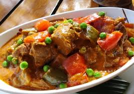

Beef Kaldereta


Beef Kaldereta (Caldereta) is a popular Filipino dish that is served during parties and holidays. This version uses beef as the main protein and incorporates red bell peppers, carrots, potatoes and frozen peas.
Beef Kaldereta (Caldereta) is a popular Filipino dish that is served during parties and holidays. This version uses beef as the main protein and incorporates red bell peppers, carrots, potatoes and frozen peas.